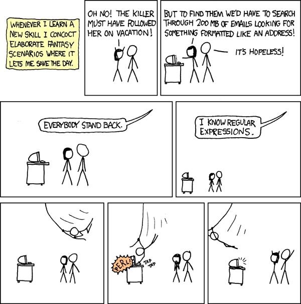

At various points in the previous chapters, we had to look for patterns in string values. In Data structures: Objects and Arrays we extracted date values from strings by writing out the precise positions at which the numbers that were part of the date could be found. Later, in Functional Programming, we saw some particularly ugly pieces of code for finding certain types of characters in a string, for example the characters that had to be escaped in HTML output.
Regular expressions are a language for describing patterns in strings. They form a small, separate language, which is embedded inside JavaScript (and in various other programming languages, in one way or another). It is not a very readable language ― big regular expressions tend to be completely unreadable. But, it is a useful tool, and can really simplify string-processing programs.
Just like strings get written between quotes, regular expression patterns get written between slashes (/). This means that slashes inside the expression have to be escaped.
var slash = /\//;
alert("AC/DC".search(slash));
The search method resembles indexOf, but it searches for a regular expression instead of a string. Patterns specified by regular expressions can do a few things that strings can not do. For a start, they allow some of their elements to match more than a single character. In Functional Programming, when extracting mark-up from a document, we needed to find the first asterisk or opening brace in a string. That could be done like this:
var asteriskOrBrace = /[\{\*]/;
var story =
"We noticed the *giant sloth*, hanging from a giant branch.";
alert(story.search(asteriskOrBrace));
The [ and ] characters have a special meaning inside a regular expression. They can enclose a set of characters, and they mean ‘any of these characters’. Most non-alphanumeric characters have some special meaning inside a regular expression, so it is a good idea to always escape them with a backslash when you use them to refer to the actual characters.
Note
In this case, the backslashes were not really necessary, because the characters occur between [ and ], but it is easier to just escape them anyway, so you won’t have to think about it.
There are a few shortcuts for sets of characters that are needed often. The dot (.) can be used to mean “any character that is not a newline”, an escaped ‘d’ (\d) means ‘any digit’, an escaped ‘w’ (\w) matches any alphanumeric character (including underscores, for some reason), and an escaped ‘s’ (\s) matches any white-space (tab, newline, space) character.
var digitSurroundedBySpace = /\s\d\s/;
alert("1a 2 3d".search(digitSurroundedBySpace));
The escaped ‘d’, ‘w’, and ‘s’ can be replaced by their capital letter to mean their opposite. For example, \S matches any character that is not white-space. When using [ and ], a pattern can be inverted by starting with a ^ character:
var notABC = /[^ABC]/;
alert("ABCBACCBBADABC".search(notABC));
As you can see, the way regular expressions use characters to express patterns makes them A) very short, and B) very hard to read.
Sometimes you need to make sure a pattern starts at the beginning of a string, or ends at its end. For this, the special characters ^ and $ can be used. The first matches the start of the string, the second the end.
alert(/a+/.test("blah"));
alert(/^a+$/.test("blah"));
The first regular expression matches any string that contains an a character, the second only those strings that consist entirely of a characters.
Note that regular expressions are objects, and have methods. Their test method returns a boolean indicating whether the given string matches the expression.
The code \b matches a ‘word boundary’, which can be punctuation, white-space, or the start or end of the string.
alert(/cat/.test("concatenate"));
alert(/\bcat\b/.test("concatenate"));
Parts of a pattern can be allowed to be repeated a number of times. Putting an asterisk (*) after an element allows it to be repeated any number of times, including zero. A plus (+) does the same, but requires the pattern to occur at least one time. A question mark (?) makes an element ‘optional’ ― it can occur zero or one times.
var parenthesizedText = /\(.*\)/;
alert("Its (the sloth's) claws were gigantic!".search(parenthesizedText));
When necessary, braces can be used to be more precise about the amount of times an element may occur. A number between braces ({4}) gives the exact amount of times it must occur. Two numbers with a comma between them ({3,10}) indicate that the pattern must occur at least as often as the first number, and at most as often as the second one. Similarly, {2,} means two or more occurrences, while {,4} means four or less.
var datePattern = /\d{1,2}\/\d\d?\/\d{4}/;
alert("born 15/11/2003 (mother Spot): White Fang".search(datePattern));
The pieces /\d{1,2}/ and /\d\d?/ both express ‘one or two digits’.
Part of a regular expression can be grouped together with parentheses. This allows us to use * and such on more than one character. For example:
var cartoonCrying = /boo(hoo+)+/i;
show("Then, he exclaimed 'Boohoooohoohooo'".search(cartoonCrying));
Where did the i at the end of that regular expression come from? After the closing slash, ‘options’ may be added to a regular expression. An i, here, means the expression is case-insensitive, which allows the lower-case B in the pattern to match the upper-case one in the string.
A pipe character (|) is used to allow a pattern to make a choice between two elements. For example:
var holyCow = /(sacred|holy) (cow|bovine|bull|taurus)/i;
alert(holyCow.test("Sacred bovine!"));
Often, looking for a pattern is just a first step in extracting something from a string. In previous chapters, this extraction was done by calling a string’s indexOf and slice methods a lot. Now that we are aware of the existence of regular expressions, we can use the match method instead. When a string is matched against a regular expression, the result will be null if the match failed, or an array of matched strings if it succeeded.
alert("No".match(/Yes/));
alert("... yes".match(/yes/));
alert("Giant Ape".match(/giant (\w+)/i));
The first element in the returned array is always the part of the string that matched the pattern. As the last example shows, when there are parenthesized parts in the pattern, the parts they match are also added to the array. Often, this makes extracting pieces of string very easy.
var parenthesized = prompt("Tell me something", "").match(/\((.*)\)/);
if (parenthesized != null)
alert("You parenthesized '", parenthesized[1], "'");
The replace method of string values, which we saw in Functional Programming, can be given a regular expression as its first argument.
alert("Borobudur".replace(/[ou]/g, "a"));
Notice the g character after the regular expression. It stands for ‘global’, and means that every part of the string that matches the pattern should be replaced. When this g is omitted, only the first "o" would be replaced.
Sometimes it is necessary to keep parts of the replaced strings. For example, we have a big string containing the names of people, one name per line, in the format “Lastname, Firstname”. We want to swap these names, and remove the comma, to get a simple “Firstname Lastname” format.
var names = "Picasso, Pablo\nGauguin, Paul\nVan Gogh, Vincent";
alert(names.replace(/([\w ]+), ([\w ]+)/g, "$2 $1"));
The $1 and $2 the replacement string refer to the parenthesized parts in the pattern. $1 is replaced by the text that matched against the first pair of parentheses, $2 by the second, and so on, up to $9.
If you have more than 9 parentheses parts in your pattern, this will no longer work. But there is one more way to replace pieces of a string, which can also be useful in some other tricky situations. When the second argument given to the replace method is a function value instead of a string, this function is called every time a match is found, and the matched text is replaced by whatever the function returns. The arguments given to the function are the matched elements, similar to the values found in the arrays returned by match: The first one is the whole match, and after that comes one argument for every parenthesized part of the pattern.
function eatOne(match, amount, unit) {
amount = Number(amount) - 1;
if (amount == 1) {
unit = unit.slice(0, unit.length - 1);
}
else if (amount == 0) {
unit = unit + "s";
amount = "no";
}
return amount + " " + unit;
}
var stock = "1 lemon, 2 cabbages, and 101 eggs";
stock = stock.replace(/(\d+) (\w+)/g, eatOne);
alert(stock);
There are cases where the pattern you need to match against is not known while you are writing the code. Say we are writing a (very simple-minded) obscenity filter for a message board. We only want to allow messages that do not contain obscene words. The administrator of the board can specify a list of words that he or she considers unacceptable.
The most efficient way to check a piece of text for a set of words is to use a regular expression. If we have our word list as an array, we can build the regular expression like this:
var badWords = ["ape", "monkey", "simian", "gorilla", "evolution"];
var pattern = new RegExp(badWords.join("|"), "i");
function isAcceptable(text) {
return !pattern.test(text);
}
alert(isAcceptable("Mmmm, grapes."));
alert(isAcceptable("No more of that monkeybusiness, now."));
We could add \b patterns around the words, so that the thing about grapes would not be classified as unacceptable. That would also make the second one acceptable, though, which is probably not correct. Obscenity filters are hard to get right (and usually way too annoying to be a good idea).
The first argument to the RegExp constructor is a string containing the pattern, the second argument can be used to add case-insensitivity or globalness. When building a string to hold the pattern, you have to be careful with backslashes. Because, normally, backslashes are removed when a string is interpreted, any backslashes that must end up in the regular expression itself have to be escaped:
var digits = new RegExp("\\d+");
alert(digits.test("101"));
The most important thing to know about regular expressions is that they exist, and can greatly enhance the power of your string-mangling code. They are so cryptic that you’ll probably have to look up the details on them the first ten times you want to make use of them. Persevere, and you will soon be off-handedly writing expressions that look like occult gibberish
 (Comic by Randall Munroe.)